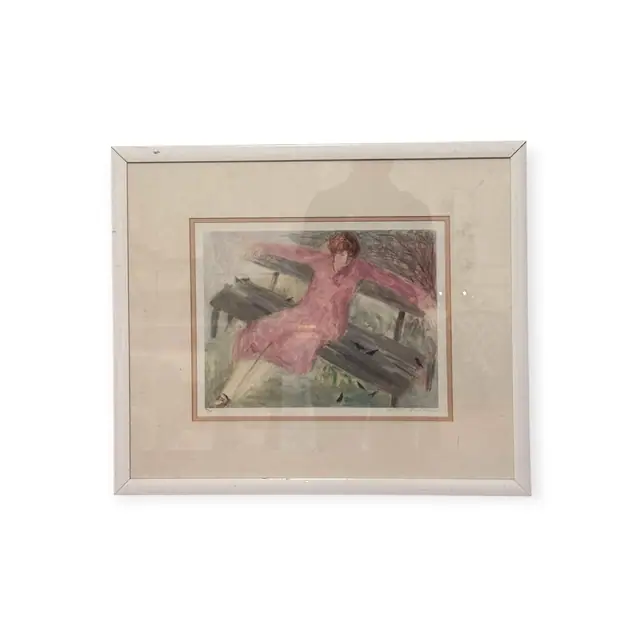
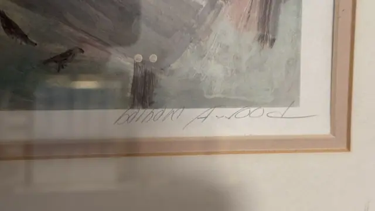
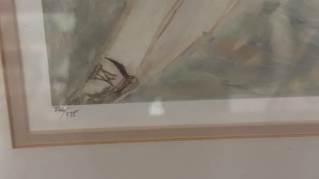
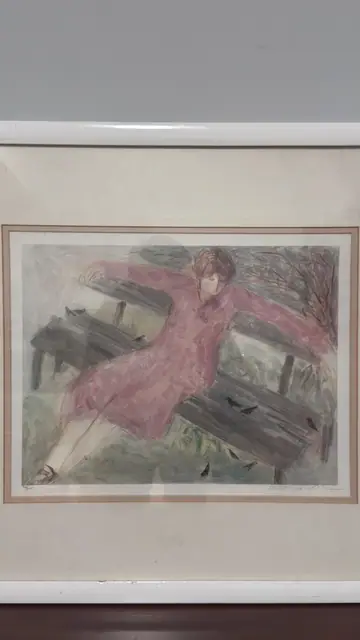

Paintings & Prints
Woman in Pink on a Park Bench, barbara A wood, Numbered Edition, Framed
barbara A wood · 1970s-1980s
Price Upon Request




About the Item
barbara A wood. A soft, atmospheric figure study: a young woman in a long dusty-rose dress lies back across a grey slatted park bench, one arm flung out along the backrest and one leg extended, her face turned down and half hidden by a bob of auburn hair. Bare winter branches and washy green-grey grass fill the background, and half a dozen small dark birds are scattered over the ground around her. The handling is loose and drawing-like, with pencil-grey contours showing through thin pink and olive washes. Wide cream mat with a rose fillet in a white lacquered frame. Medium: colour lithograph / offset print on paper, pencil signed and numbered. Signed lower right margin, in pencil, reading "barbara A wood". Edition: 366/975. Inscribed on the reverse or mount: barbara A wood (pencil, lower right margin); 366/975 (pencil, lower left margin). Condition: Mat and sheet lightly toned; the white frame has small scuffs at the lower edge; no visible tears or foxing.
Details
- Creator:
- barbara A wood
- Creation Year:
- 1970s-1980s
- Dimensions:
- Height: 22.0 in (55.88 cm)
Width: 25.5 in (64.77 cm)
outside of frame - Medium:
- colour lithograph / offset print on paper, pencil signed and numbered
- Edition:
- 366/975
- Period:
- 20Th
- Condition:
- Offered in the condition shown in the photographs.
- Reference Number:
- VO-136
- Documentation:
- no certificate photographed
- Gallery Location:
- barbara A wood (pencil, lower right margin); 366/975 (pencil, lower left margin)